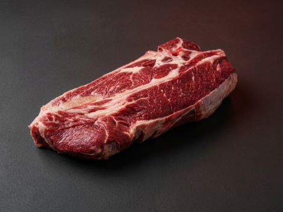

Mapa CarneCerta
Grande corte com presença e sabor
O bistecão do acem é uma opção marcante para quem gosta de cortes generosos e muito saborosos na grelha.

Ideal para • churrasco • bife • grelha
Maciez
4/5
Boa
Gordura
4/5
Equilibrada
Sabor
5/5
Marcante
Abrir recomendador inteligente
Bistecão do Acem
Um corte robusto, saboroso e com excelente presença para churrascos e grelhas mais tradicionais.
O bistecão do acem é ideal para quem quer um corte com textura firme, gordura bem distribuída e ótimo desempenho em preparos de fogo alto.
Grelha
Bifes grossos
Churrasco
4.8
Corte de churrasco
Uma excelente escolha para quem busca um corte com presença, sabor intenso e ótimo resultado no fogo.
Ideal para
Dica do açougueiro IA
Deixe a carne dourar bem antes de virar para garantir sabor e suculência sem ressecar.